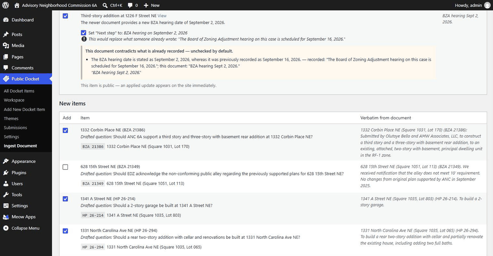

Public Docket gives your organization one place to post the items before a board, gather what residents think, and publish what the board actually did — one matter on one page, rather than buried somewhere in the meeting package.
The demo builds a complete WordPress site inside your browser tab. Nothing to install, nothing to sign up for.
What was discussed, what residents said, and what the board decided are all published already. They are published inside long documents that take hours to sift through, which is a different thing from being available.
pages in ANC 6A's meeting package for a single evening in September 2026.
separate PDFs linked from one agendas page, across the commission and its four committees.
documents per meeting — agenda, package, recording — each a separate download.
To learn what happened to a building on your block, you need to know which committee handled it, which month it came up, and which of those files to open. Public Docket invents nothing and replaces nothing. It lifts what is already in those documents onto one page per matter, so a resident can read it in a minute instead of an afternoon.
Someone has to read the 108-page package and work out which items residents will care about. Upload it instead, and the AI does that first pass: it finds each matter, pulls the case number and address, and drafts a plain-language question. You read down the list and tick what to keep.

It uses whichever provider you have already set up in the AI Engine plugin — Google Gemini, OpenAI, Anthropic and others — under your own API key. Your documents go to the provider you pick and nowhere else. There is no service in the middle, and no account to open with us.
You can also add standing instructions in your own words, so the AI follows your house conventions on every upload.
Honest about the gaps: PDFs are not read yet, so save the document as plain text first. A matter with no case number — a letter of support, say — is not yet matched to its earlier entry automatically. And an AI misreading a document is a real possibility, which is exactly why every drafted item sits beside its source text and waits for a person.
There is no AI built into HearBack and nothing to subscribe to. You connect whichever provider your organization already uses or trusts — OpenAI, Anthropic, Google, OpenRouter, Mistral, Perplexity, Replicate — with your own API key, and you can change provider or model whenever you want, even per document. Setting it up takes eight steps and about forty seconds to watch.
Add every item coming before your board, from votes to updates to open questions, each in its own drawer residents can browse.
Residents weigh in right on the item. Staff group submissions into themes so the board sees what people are actually saying.
Record the outcome and the reasoning. Residents see what was decided and how their input figured in.
Run many items side by side instead of one feedback form per issue.
Set your own response options to match your process. Not every item ends in a vote.
Items, themes, and submissions on a single admin screen, not scattered across menus.
Turn a pile of submissions into clear points the board can respond to.
Install it on the WordPress site you already run. Your data stays with you.
Upload an agenda and it drafts the docket for you, quoting its source. See it above.
If you support neighborhood commissions, advisory boards, or community coalitions, Public Docket is a tool you can deploy for them on infrastructure they already understand, then customize, brand, and build on.
Explore the demo, install the plugin, or join the project.
New to it? Start with the step-by-step guide.